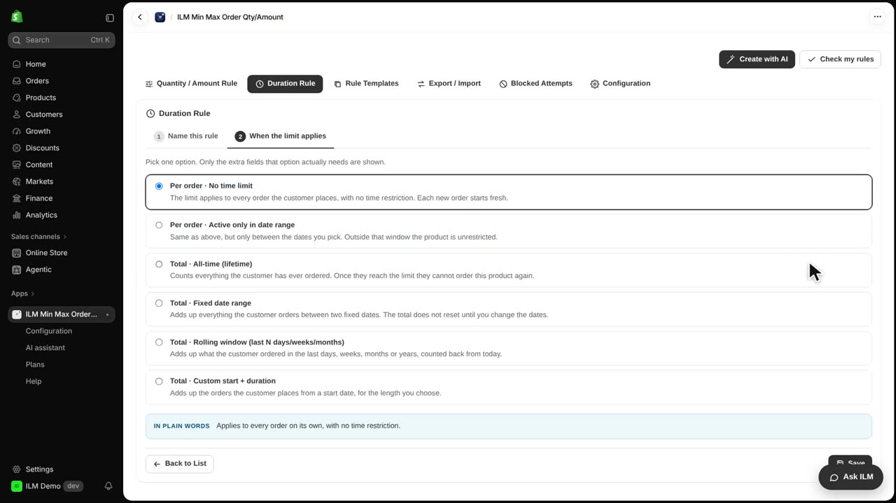
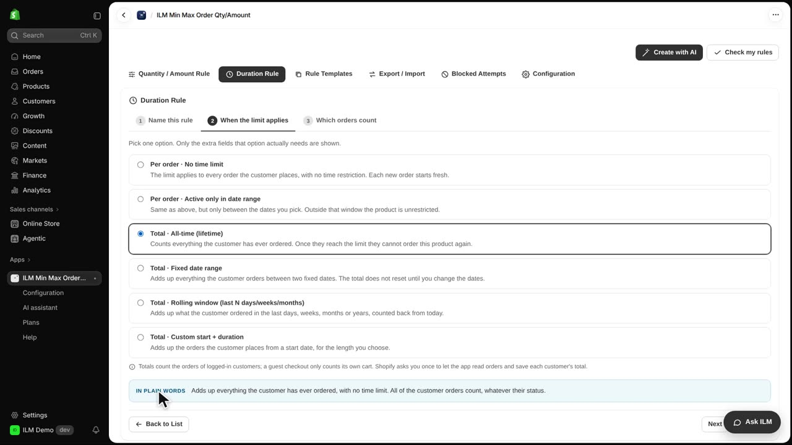
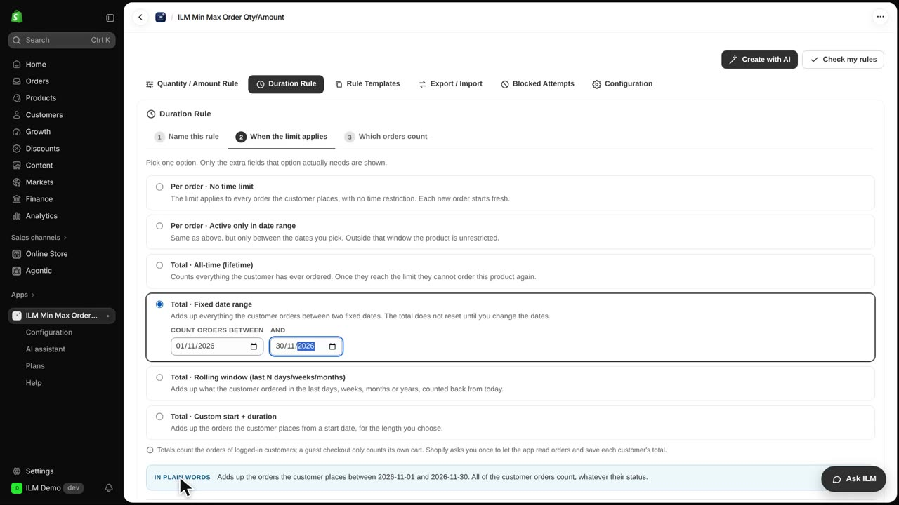
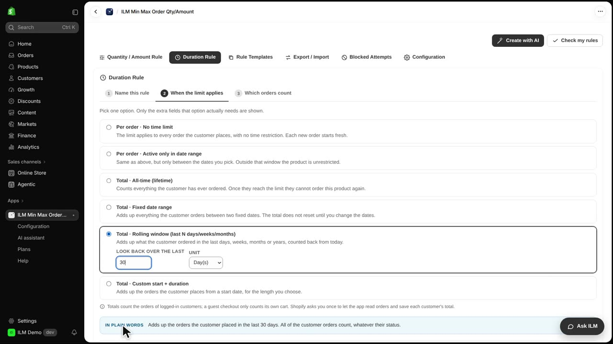
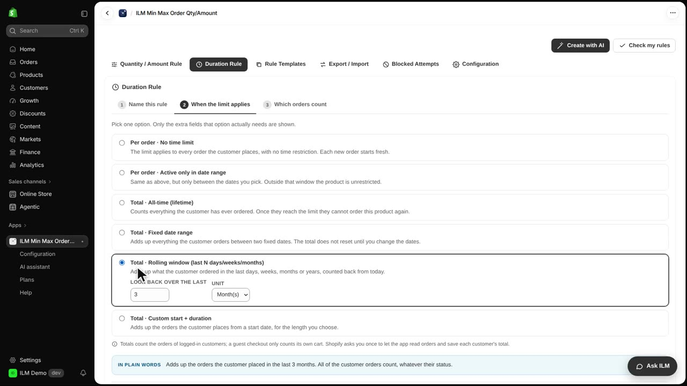
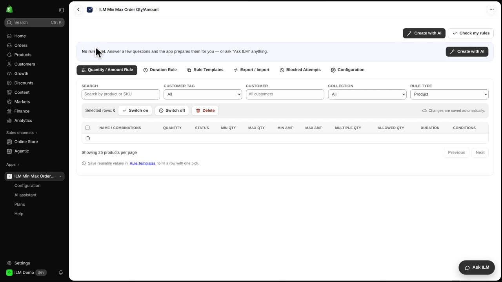
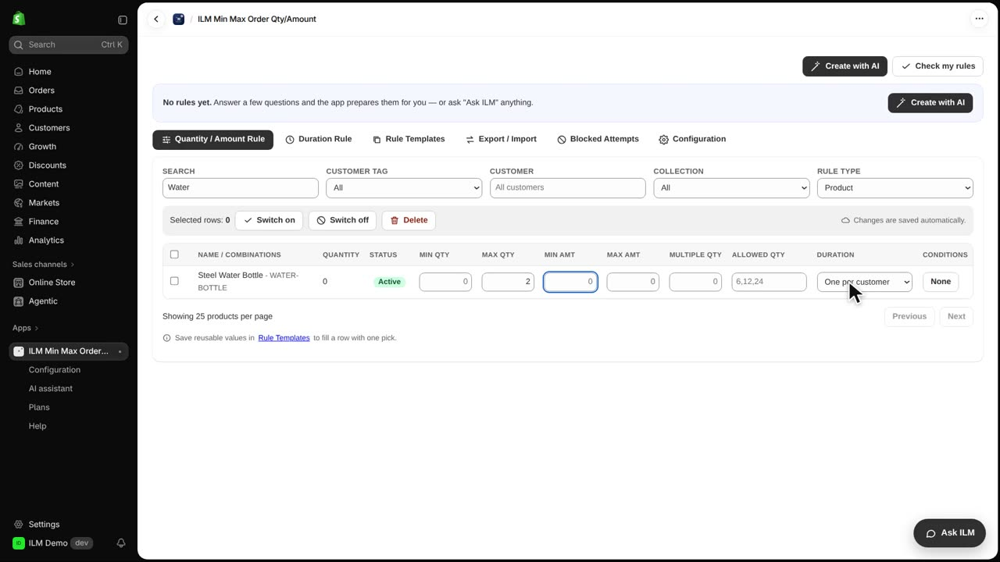

Total duration rules count what a logged-in customer has already ordered, not only what is in the cart right now. This lets you cap repeat purchases over time, so one shopper cannot keep buying the same item again and again. Today we set up each kind of total rule with a real example, using the Steel Water Bottle. You will see what each option means, when a shop would use it, and what the shopper experiences.
We start on the Duration Rule tab and click Create Rule. We name the rule One per customer, then click Next. This name is what you will later pick in a product's Duration column, so keep it short and clear.

The first choice is Total, All-time, lifetime. This counts everything the customer has ever ordered, with no end date. With a maximum of one, each customer can buy the product only once, ever. A shop selling limited collectibles would use this so nobody buys the whole stock.

Next is Total, Fixed date range. Here we set a start date of the first of November and an end date of the thirtieth of November, so only orders inside that window count. A shop running a one-month promotion would use this to limit each customer to a set number during the campaign. The plain-words line confirms exactly what the rule will do.

Then we choose Total, Rolling window. We type thirty in the Look back over the last field and pick the unit, so the rule counts orders from the last thirty days. Older orders drop out by themselves as time passes. A shop selling consumables, like the Green Tea Tin, might use this to stop a customer from stocking up too far ahead.

The last kind is Total, Custom start plus duration. We set Starting from the first of November and lasting three, with the unit chosen. This counts orders from that start date for the length you pick, for example three months from the first of November. A shop with a seasonal subscription, like the Christmas Scented Candle, would use this to cap purchases during the season. We then switch back to Rolling window to keep that as our example.

On the next step we choose which orders count. We tick Paid, so only paid orders are counted, and leaving all boxes empty would count every order. The plain-words line again says in simple language what the rule will do. We click Save, and the rule appears in the Duration Rule List.

Finally we go to the Quantity / Amount Rule tab and search for Water. We set Max Qty for the Steel Water Bottle to two, then in the Duration column we pick One per customer. A customer who has already bought two cannot buy more until the window allows it. This is how a duration rule combines with a quantity limit on the same product.
